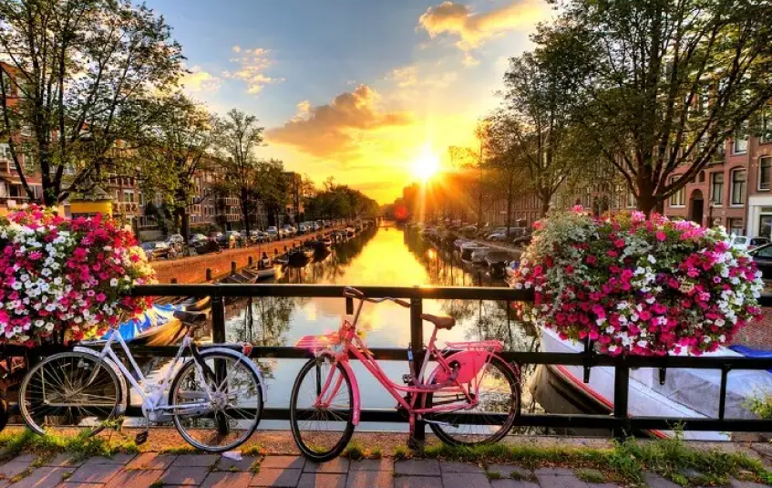

Amsterdam is echt een van de mooiste steden ter wereld. We hebben een complete gids voor Amsterdam voor je gemaakt als first-timer.
Amsterdam is de hoofdstad van Nederland - een enorme stad met meer dan een miljoen inwoners, vol met ongelooflijke architectuur, musea, eten en cultuur. Het wordt vaak het Venetië van het Noorden genoemd, vanwege de vele kanalen die de stad doorkruisen en de 1.281 bruggen die langs die kanalen te vinden zijn.
Als je denkt aan een reis naar Amsterdam, bekijk dan onze essentiële reisgids voor Amsterdam voor de beste hotels, buurten, dingen om te doen en plekken om te eten en drinken in Amsterdam, Nederland.
Amsterdam was een grote verrassing voor mij. Ik had Venetië altijd gezien als de stad van de grachten; het was nooit in me opgekomen dat ik soortgelijke omstandigheden in een Nederlandse stad zou vinden.
Of je nu de voorkeur geeft aan cultuur en geschiedenis, rondneuzen in musea, serieus feesten of gewoon genieten van de ontspannen charme van een oude Europese stad, er zijn veel verschillende buurten (of wijken) om te verkennen in Amsterdam.

Wanneer naar Amsterdam?
Elk moment van het jaar is goed om naar Amsterdam te reizen, hoewel het raadzaam is om regenkleding mee te nemen omdat het elk moment kan regenen. Juli tot augustus wordt beschouwd als het hoogseizoen voor reizen. Zo vind je de beste tarieven voor hotels en vluchten buiten die tijden. Om gekke drukte te vermijden en toch te genieten van mooi weer, raden we aan om Amsterdam te bezoeken in:
- April
- Mei
- September
- Oktober
Wat het weer betreft, het wordt in Amsterdam nooit echt te warm of te koud. Wolken en wat regen zijn echt de omvang van de weerpatronen.
Wat te doen in Amsterdam
Amsterdam, de hoofdstad van Nederland, is een van de meest populaire toeristische bestemmingen in Europa. Met zijn universiteiten, academies en onderzoeksinstituten, samen met meer dan 40 musea, talrijke theaters en uitgaansgelegenheden, is Amsterdam ook het belangrijkste culturele centrum van het land.
Daarnaast staat de stad bekend om zijn vele goed bewaarde historische huizen. Deze goed bewaarde monumentale gebouwen, opgesteld in een patroon van concentrische segmenten in de vorm van een waaier, zijn gebouwd op palen die door een bovenste laag modder in de stevige zandbodem worden gedreven tot 18 meter lager.
Ontdek de beste plaatsen om te bezoeken in deze dynamische stad met onze lijst met topattracties en leuke dingen om te doen in Amsterdam:
- Bekijk de kunstcollecties in het Rijksmuseum
- Bezoek het Anne Frank huis
- Beleef geweldige kunst in het Van Gogh Museum
- Verken de Jordaan
- Beleef familieplezier en bloemen in het Vondelpark
- Kijk naar mensen op de Dam
- Ga shoppen in de Kalverstraat en Bloemenmarkt
- Verrijk je kennis in het NEMO Science Museum
- Ontdek de Wallen